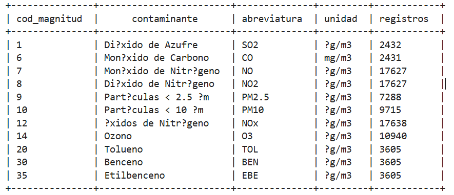
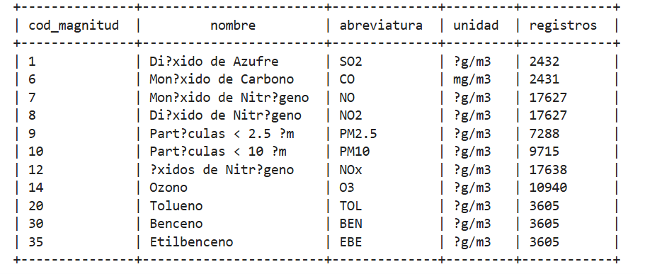
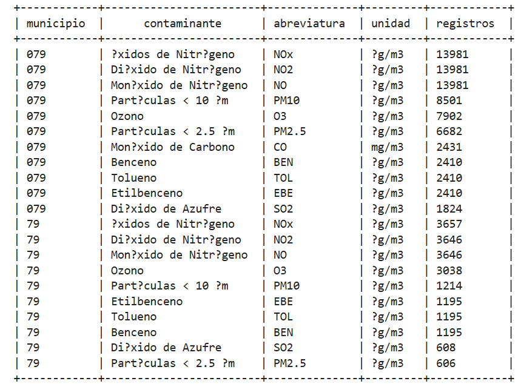
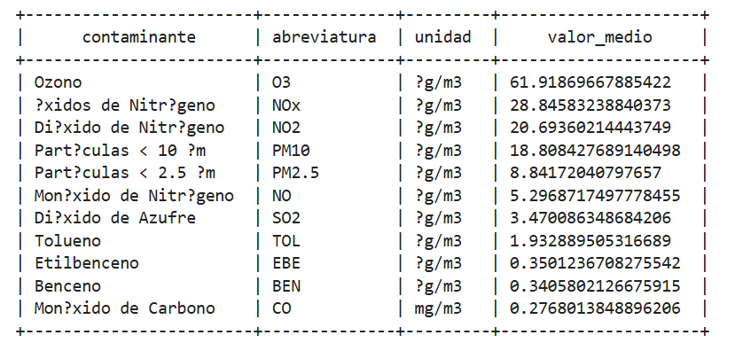
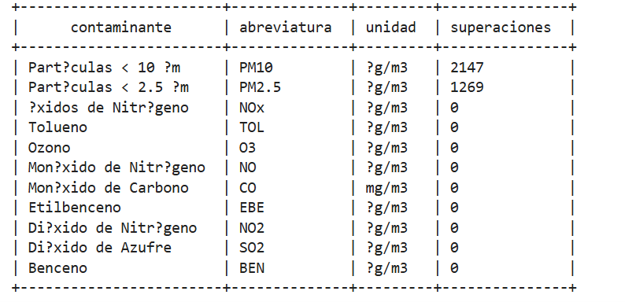

Trabajo Fin de Grado - Arturo Cabello Rodríguez
Análisis de datos de calidad del aire mediante HiveQL
InicioEn este ejercicio se propone utilizar Apache Hive para realizar consultas sobre un conjunto de datos abiertos correspondiente a la calidad del aire de Madrid. El objetivo es aplicar los conocimientos adquiridos sobre el ecosistema Hadoop, especialmente sobre HDFS, Hive y el lenguaje de consultas HiveQL.
El conjunto de datos se descarga inicialmente desde el entorno Jupyter Notebook y posteriormente se almacena en el sistema de archivos distribuido HDFS. Una vez disponible en HDFS, los datos pueden ser registrados mediante una tabla de Apache Hive y explotados mediante consultas SQL.
Este ejercicio permite al estudiante comprobar cómo una fuente de datos externa puede incorporarse al ecosistema Hadoop y ser posteriormente consultada mediante una interfaz SQL, sin necesidad de desarrollar directamente programas MapReduce.
El objetivo principal consiste en familiarizar al estudiante con el proceso completo de incorporación y explotación de un conjunto de datos abiertos mediante Apache Hive.
Durante el ejercicio se trabajan las siguientes fases:
El conjunto de datos se proporciona en formato CSV y utiliza el punto y coma (;)
como separador. Cada
registro incluye información de localización, estación, contaminante, fecha y mediciones
horarias.
Entre los campos principales se encuentran:
PROVINCIA, MUNICIPIO y ESTACION.MAGNITUD y PUNTO_MUESTREO.ANO, MES y DIA.H01 a H24: valores horarios registrados.V01 a V24: códigos de validación asociados a los valores
horarios.Tras descargar el fichero desde Jupyter Notebook, debe comprobarse que está disponible en la ruta de HDFS utilizada por la tabla externa o administrada de Hive.
Para realizar la descarga del fichero con los datos de calidad del aire de Madrid:
import requests
url = "https://datos.madrid.es/dataset/201200-0-calidad-aire-horario/resource/201200-1-calidad-aire-horario-csv/download/201200-1-calidad-aire-horario-csv.csv"
ruta = "/media/notebooks/calidad_aire_madrid.csv"
respuesta = requests.get(url)
respuesta.raise_for_status()
with open(ruta, "wb") as f:
f.write(respuesta.content)
print("Descarga completada")
print(f"Archivo guardado en: {ruta}")
Se crea una base de datos específica para mantener organizadas las tablas de este ejercicio:
CREATE DATABASE IF NOT EXISTS calidad_aire;
Una vez disponible el fichero en HDFS, se accede al servidor Hive mediante Beeline. En este ejercicio, las operaciones de creación de la base de datos y de las tablas se realizan desde el cliente Beeline.
beeline -u jdbc:hive2://localhost:10000Las tablas de mediciones y de referencia se crearán dentro de la base de datos
calidad_aire.
El fichero se encuentra almacenado en HDFS en la siguiente ubicación:
/dataset/calidad_aire_madrid/calidad_aire_madrid.csv
A continuación se crea la base de datos destinada a almacenar la información de calidad del aire:
CREATE DATABASE IF NOT EXISTS calidad_aire;
USE calidad_aire;De esta forma se dispone de un espacio lógico independiente dentro de Hive para realizar las consultas sobre el conjunto de datos.
Una vez creada la base de datos, se definen las tablas que permitirá consultar el fichero CSV mediante HiveQL. La estructura de la tabla reproduce los principales campos disponibles en el conjunto de datos.
Entre ellos destacan la estación de medición, la magnitud contaminante, la fecha y los valores correspondientes a las diferentes horas del día.
Además, los datos de la tabla de calidad del aire serán cruzados con los datos de la tabla maestra magnitudes para detallar los tipos de magnitudes a explotar.
Con el objetivo de evaluar los posibles beneficios del formato Parquet frente al for-mato CSV, se ha realizado una prueba experimental utilizando Apache Hive sobre el conjunto de datos de calidad del aire de Madrid. Para ello, se ha ejecutado la misma consulta analítica sobre las tablas datos_calidad_aire, almacenada en formato CSV, y datos_calidad_aire_parquet, almacenada en formato Parquet.
Se ejecutó la misma consulta analítica sobre las tablas CSV y Parquet. La consulta relaciona
las mediciones con la
tabla de magnitudes mediante un JOIN, agrupa los resultados por código, nombre,
abreviatura y unidad, y
cuenta los registros asociados a cada contaminante.
| Formato de almacenamiento | Tiempo de ejecución |
|---|---|
| CSV | 110,43 segundos |
| Parquet | 102,55 segundos |
En esta prueba, Parquet finalizó la consulta 7,88 segundos antes que CSV, lo que supone una reducción aproximada del 7,14 % respecto al tiempo medido para CSV.
Este resultado corresponde a una ejecución concreta y no demuestra que Parquet sea siempre más rápido. Para obtener conclusiones más robustas sería conveniente repetir las pruebas, comparar varias consultas y revisar el espacio ocupado por los ficheros en HDFS.
Uno de los campos más importantes del conjunto de datos es MAGNITUD. Este campo contiene un código numérico que identifica el contaminante o parámetro medido por la estación.
La correspondencia entre los códigos y las magnitudes disponibles permite interpretar correctamente los resultados obtenidos mediante Hive.
| Código | Magnitud | Abreviatura |
|---|---|---|
| 01 | Dióxido de Azufre | SO₂ |
| 06 | Monóxido de Carbono | CO |
| 07 | Monóxido de Nitrógeno | NO |
| 08 | Dióxido de Nitrógeno | NO₂ |
| 09 | Partículas < 2.5 µm | PM2.5 |
| 10 | Partículas < 10 µm | PM10 |
| 12 | Óxidos de Nitrógeno | NOx |
| 14 | Ozono | O₃ |
| 20 | Tolueno | TOL |
| 30 | Benceno | BEN |
| 35 | Etilbenceno | EBE |
| 37 | Metaxileno | MXY |
| 38 | Paraxileno | PXY |
| 39 | Ortoxileno | OXY |
| 42 | Hidrocarburos totales (hexano) | TCH |
| 43 | Metano | CH₄ |
| 44 | Hidrocarburos no metánicos (hexano) | NMHC |
| 431 | Metaparaxileno | MPX |
La consulta siguiente ilustra el cruce entre ambas tablas. Los códigos se convierten a entero
para evitar diferencias
entre valores almacenados como, por ejemplo, 01 y 1.
SELECT
CAST(TRIM(d.MAGNITUD) AS INT) AS cod_magnitud,
m.nombre AS contaminante,
m.abreviatura,
m.unidad,
COUNT(*) AS registros
FROM calidad_aire.datos_calidad_aire d
LEFT JOIN calidad_aire.magnitudes m
ON CAST(TRIM(d.MAGNITUD) AS INT) =
CAST(TRIM(m.magnitud) AS INT)
WHERE TRIM(d.MAGNITUD) <> 'MAGNITUD'
AND TRIM(m.magnitud) <> 'Cod. Magnitud'
GROUP BY
CAST(TRIM(d.MAGNITUD) AS INT),
m.nombre,
m.abreviatura,
m.unidad
ORDER BY cod_magnitud;Esta consulta permite comprobar qué magnitudes aparecen en los datos y cuántos registros hay para cada una.

Una vez comprobada la carga de los datos, se realizan consultas HiveQL para estudiar la distribución de las mediciones y obtener indicadores descriptivos. Los resultados dependen del fichero cargado, de los filtros aplicados y de los criterios de cálculo.
La agrupación por contaminante permite identificar las magnitudes con mayor número de observaciones. En el conjunto analizado, los óxidos de nitrógeno (NOx) presentan 17.638 registros. Les siguen el monóxido de nitrógeno (NO) y el dióxido de nitrógeno (NO₂), con 17.627 registros cada uno. El ozono registra 10.940 observaciones, mientras que PM10 y PM2.5 cuentan con 9.715 y 7.288 registros, respectivamente.
SELECT
d.MAGNITUD AS cod_magnitud,
m.NOMBRE AS nombre,
m.ABREVIATURA AS abreviatura,
m.UNIDAD AS unidad,
COUNT(*) AS registros
FROM calidad_aire.datos_calidad_aire d
LEFT JOIN calidad_aire.magnitudes m
ON CAST(TRIM(d.MAGNITUD) AS INT) =
CAST(TRIM(m.MAGNITUD) AS INT)
WHERE TRIM(d.MAGNITUD) <> 'MAGNITUD'
AND TRIM(m.MAGNITUD) <> 'Cod. Magnitud'
GROUP BY
d.MAGNITUD,
m.NOMBRE,
m.ABREVIATURA,
m.UNIDAD
ORDER BY
CAST(d.MAGNITUD AS INT);
La distribución no es homogénea entre las magnitudes. El número de observaciones depende, entre otros factores, de los contaminantes medidos por las estaciones y de la disponibilidad de registros.

El análisis por municipio permite conocer cómo se distribuyen territorialmente las observaciones disponibles. La consulta siguiente cuenta los registros asociados a cada municipio:
SELECT
m.NOMBRE AS magnitud,
m.ABREVIATURA AS abreviatura,
m.UNIDAD AS unidad,
COUNT(*) AS registros
FROM calidad_aire.datos_calidad_aire d
JOIN calidad_aire.magnitudes m
ON CAST(TRIM(d.MAGNITUD) AS INT) =
CAST(TRIM(m.MAGNITUD) AS INT)
WHERE TRIM(d.MAGNITUD) <> 'MAGNITUD'
GROUP BY
m.NOMBRE,
m.ABREVIATURA,
m.UNIDAD
ORDER BY registros DESC;El número de registros no debe interpretarse directamente como una medida de la calidad del aire de un municipio. También depende del número de estaciones, de las magnitudes que se miden y del periodo de observación.

El cálculo de las medias permite comparar las concentraciones registradas para cada magnitud. En los resultados obtenidos, el ozono presenta el mayor valor medio numérico entre los contaminantes analizados, seguido por los óxidos de nitrógeno y el dióxido de nitrógeno.
SELECT
m.NOMBRE AS contaminante,
m.ABREVIATURA AS abreviatura,
m.UNIDAD AS unidad,
AVG(
(COALESCE(d.H01,0) + COALESCE(d.H02,0) +
COALESCE(d.H03,0) + COALESCE(d.H04,0) +
COALESCE(d.H05,0) + COALESCE(d.H06,0) +
COALESCE(d.H07,0) + COALESCE(d.H08,0) +
COALESCE(d.H09,0) + COALESCE(d.H10,0) +
COALESCE(d.H11,0) + COALESCE(d.H12,0) +
COALESCE(d.H13,0) + COALESCE(d.H14,0) +
COALESCE(d.H15,0) + COALESCE(d.H16,0) +
COALESCE(d.H17,0) + COALESCE(d.H18,0) +
COALESCE(d.H19,0) + COALESCE(d.H20,0) +
COALESCE(d.H21,0) + COALESCE(d.H22,0) +
COALESCE(d.H23,0) + COALESCE(d.H24,0)
) / 24.0
) AS valor_medio
FROM calidad_aire.datos_calidad_aire d
JOIN calidad_aire.magnitudes m
ON CAST(TRIM(d.MAGNITUD) AS INT) =
CAST(TRIM(m.MAGNITUD) AS INT)
WHERE TRIM(d.MAGNITUD) <> 'MAGNITUD'
GROUP BY
m.NOMBRE,
m.ABREVIATURA,
m.UNIDAD
ORDER BY valor_medio DESC;
Como los valores horarios se encuentran en las columnas
H01 a H24, la media debe
calcularse utilizando únicamente mediciones válidas y no nulas,
según el criterio definido para el conjunto de
datos. La consulta exacta debe ajustarse al método de validación y
tratamiento de valores ausentes empleado en la
práctica.
Para este análisis se contabilizan los registros que superan los umbrales utilizados en el ejercicio. La tabla siguiente recoge los resultados de la consulta más reciente:
| Contaminante | Valor de referencia | Número de superaciones |
|---|---|---|
| NO₂ | 200 | 0 |
| O₃ | 180 | 0 |
| PM10 | 50 | 1.114 |
| PM2.5 | 25 | 808 |
| SO₂ | 350 | 0 |
Las partículas PM10 presentan el mayor número de superaciones, con 1.114 registros por encima del valor de referencia de 50. En segundo lugar se encuentran las partículas PM2.5, con 808 superaciones respecto al umbral de 25. Para NO₂, O₃ y SO₂ no se detectaron superaciones con los umbrales aplicados.
Consultar punto In [32] Jupyter Notebook pra analizar consulta sqlEstos resultados identifican las magnitudes con más superaciones en los datos analizados. Antes de interpretar los recuentos como incumplimientos normativos, es necesario comprobar que los valores de referencia, las unidades, los periodos de promedio y los criterios de validez de las mediciones coinciden con los exigidos por la normativa aplicable.

Como los valores horarios se encuentran en las columnas
H01 a H24, la media debe
calcularse utilizando únicamente mediciones válidas y no nulas,
según el criterio definido para el conjunto de
datos. La consulta exacta debe ajustarse al método de validación y
tratamiento de valores ausentes empleado en la
práctica.
La realización de este ejercicio permite comprobar cómo Apache Hive facilita la explotación de grandes conjuntos de datos almacenados en HDFS mediante un lenguaje basado en SQL.
A partir del conjunto de datos de calidad del aire de Madrid, el estudiante ha realizado el proceso completo de incorporación de información externa al ecosistema Hadoop, desde su almacenamiento en HDFS hasta su consulta mediante HiveQL.
Además, la utilización del campo MAGNITUD permite introducir operaciones de agrupación, recuento y clasificación de los datos, relacionando los códigos existentes en el fichero con los diferentes contaminantes atmosféricos.
Este ejercicio complementa los trabajos realizados anteriormente con HDFS, MapReduce, Hadoop Streaming y otros componentes del ecosistema, mostrando una alternativa basada en consultas declarativas para el análisis de información almacenada en un entorno Big Data.